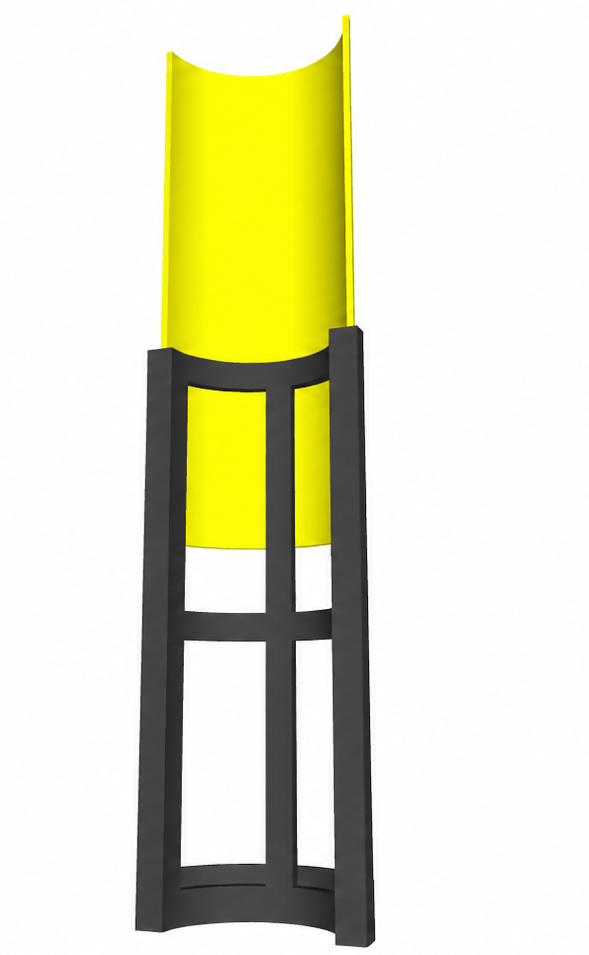
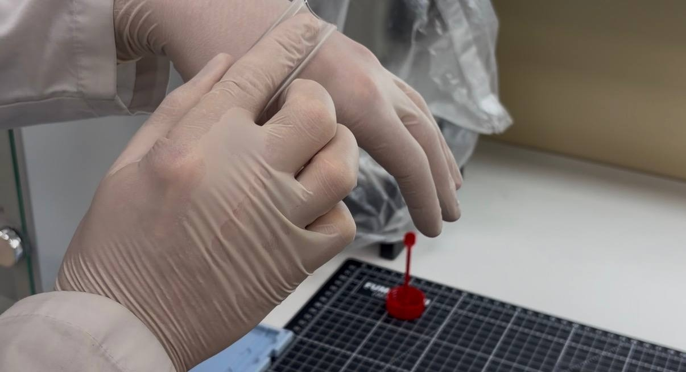
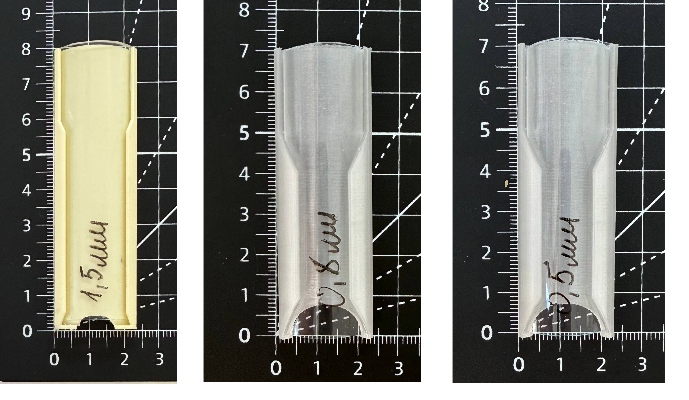
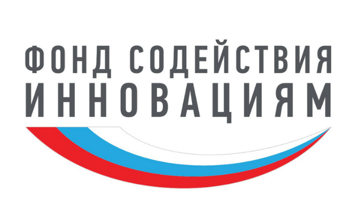
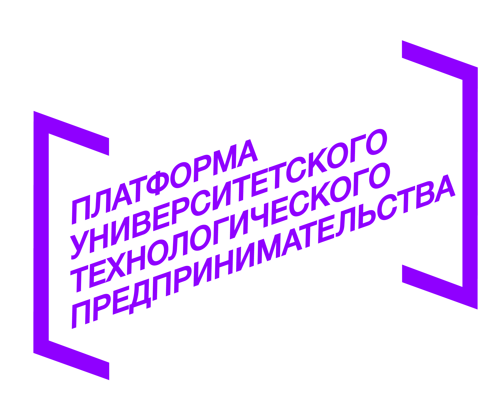

Инновационное устройство для взятия биопроб на энтеробиоз
Обеспечивает забор биоматериала на энтеробиоз простым, безопасным и пациентоориентированным методом.
Устройство объединяет несущую конструкцию, гибкую рабочую пластину и оптимизированную клеевую основу. Оно рассчитано на самостоятельный забор материала дома, безопасную транспортировку до лаборатории и удобную работу врача при микроскопии. Конструкция исключает травматизм, обеспечивает надёжную фиксацию образца и позволяет исключить появление артефактов при исследовании.



Энтеробиоз
Широко распространенное паразитическое заболевание (142 тысячи зарегистрированных заболеваний в России на 2023 год), вызываемое острицами. Основные пациенты - дети от 3 до 7 лет, что существенно усложняет сбор материала как для врача, так и для пациента. Использование подручных материалов затрудняет диагностику.
О нас
CryptoSens — это российский стартап, разрабатывающий инновационное устройство для взятия биопроб на энтеробиоз. Мы решаем практическую проблему, с которой сталкиваются и пациенты, и лаборатории: существующие методы забора материала неэффективны, травматичны, часто снижают качество диагностики и неудобны для самостоятельного использования в домашних условиях. В команде проекта объединены инженеры-конструкторы, практикующие врачи-паразитологи и опытные микроскописты, что дает нам прочное основание для создания качественного российского продукта при поддержке Сеченовского Университета и Фонда содействия инновациям. Разработки производятся на лабораторных базах ведущего института медицинской паразитологии с использованием новейших полимерных материалов и технологий в области 3D – печати, а доступ к клиническому материалу позволяет постоянно тестировать разработки в условиях, имитирующих естественные, вносить улучшения, основываясь на полученных результатах и экспертных заключениях.

Модель
Были опробованы разные материалы. Сделаны тестовые модели. Была получена обратная связь от врачей клиницистов. Учитывая вышеперечисленное была разработана финальная версия устройства.


«Проект реализован при поддержке Фонда содействия инновациям в рамках программы «Студенческий стартап» мероприятия «Платформа университетского технологического предпринимательства» федерального проекта «Технологии»